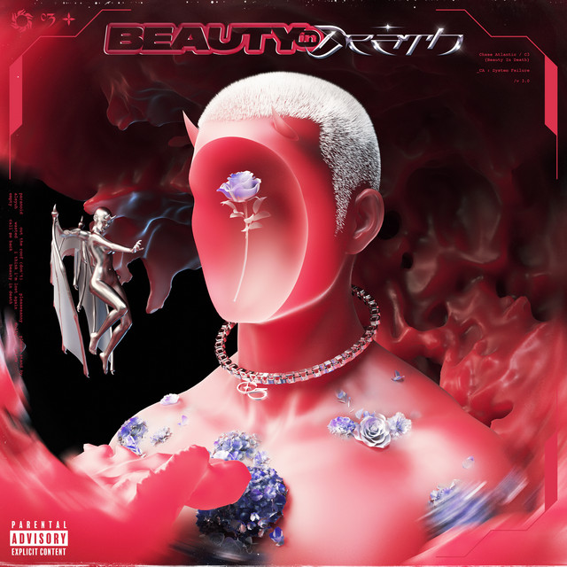
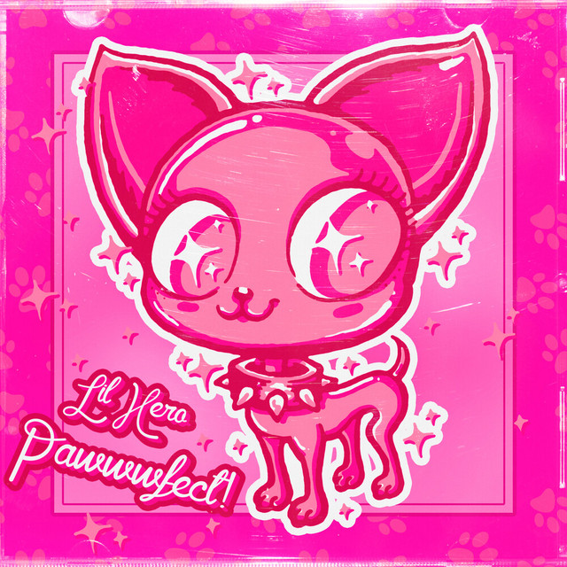

Keshi
Requiem

Call Me Back
Chase Atlantic
Beauty in Death
Chase Atlantic
Beauty in Death
Megan Thee Stallion
Megan: Act II
Imogen Heap
Speak For Yourself

gun show
lilhero
pawwwfect!
lilhero
pawwwfect!